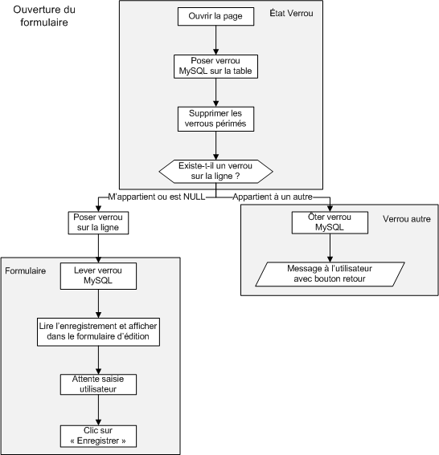

Les bases de données permettent de stocker des informations dans des tables. Dans un système où tous les utilisateurs se connectent en lecture simple des informations et où au maximum une seule personne modifie les données à la fois, il n'y a aucun problème. Mais dans un système où plusieurs utilisateurs peuvent modifier des données sur la même ligne de la base de données en même temps, il va y avoir une collision et une incohérence des données mémorisées.
Cette image présente le cas où deux utilisateurs souhaitent modifier 2 informations différentes sur une même ligne de la base de données, celle qui contient les coordonnées de M. Dupond. Pour résoudre ce conflit d'accès nous allons utiliser une technique de verrou.
Le verrou est une information associée à une donnée ou un groupe de donnée qui bloque l'accès aux données verrouillées aux autres utilisateurs. Lorsqu'un utilisateur souhaite accéder à une donnée verrouillée :
Soit il reçoit un message d'erreur lui indiquant que la donnée est verrouillée et qu'il faut donc repasser plus tard.
Soit il est mis dans une file d'attente, et aura accès aux données une fois que l'utilisateur qui a posé le verrou, l'aura levé.
Ces verrous sont principalement de trois types :
Ils peuvent empêcher tout accès aux données aux autres utilisateurs.
Ils peuvent laisser uniquement un accès en lecture seule aux autres utilisateurs.
Le dernier utilisateur qui accède aux données en lecture pour modification prend le verrou. Quand il enregistre, il vérifie qu'il a encore le verrou. Ce type de verrouillage ne me semble pas très ergonomique pour l'utilisateur, donc nous n'allons pas l'utiliser dans ce tuto.
MySQL possède de manière native des verrous. Ces verrous sont associés à des connexions à la base de données. Ainsi deux scripts PHP utilisant les mêmes identifiants de connexion, sont des connexions différentes. (Chaque script à sa connexion à la base de données). Ces verrous sont de deux types :
Les verrous READ permettent aux autres connexions d'accéder aux données verrouillées en lecture seule.
Les verrous WRITE empêchent tout accès aux autres connexions
Pour la suite du tuto nous allons utiliser uniquement des verrous WRITE, afin de s'assurer qu'un autre script ne vienne pas prendre des informations susceptibles d'êtres en cours de modification.
Les verrous sont automatiquement levés dès que la connexion à la base MySQL est fermée, ou dès que des verrous sont posés sur une autre table de la base par la même connexion.
Lorsqu'une connexion veut accéder à une donnée verrouillée par une autre connexion, MySQL met la requête en attente. Elle sera exécutée dès que le verrou sera levé.
Exemple pour poser un verrou WRITE sur une table MaTable
LOCK TABLE MaTable WRITE;
Quand une connexion pose un verrou sur une ou plusieurs tables, elle ne peut accéder qu'aux tables verrouillées avec les noms déclarés lors du verrou. Si cette contrainte n'est pas respectée, MySQL génère une erreur.
Exemple pour poser un verrou WRITE sur une table MaTable qui sera accédée dans les requêtes avec l'alias mt
LOCK TABLE MaTable AS mt WRITE;
Si dans les requêtes SQL, on accède à plusieurs tables ou à une même table avec plusieurs alias, il faut les verrouiller toutes en même temps. Exemple pour poser un verrou WRITE sur une table MaTable qui sera accédés dans les requêtes avec son nom d'origine et l'alias mt, ainsi que la table AutreTable
LOCK TABLE MaTable WRITE, MaTable AS MT WRITE, AutreTable WRITE;
Pour aller plus loin sur la syntaxe de ses verrous, je vous invite à lire la documentation officielle de MySQL.
Je commence à comprendre comment on met des verrous. Mais pour les supprimer, sans fermer la connexion SQL ni poser un autre verrou, je fais comment ?
C'est simple il suffit d'utiliser la bonne requête :-° . Elle supprime tous les verrous éventuels de la connexion courante. Il est possible de l'exécuter qu'il y ait 1, 10, ou 0 verrous...
Nous avons vu les possibilités natives de MySQL. Cependant un verrou natif ne permet pas de verrouiller l'accès aux données plus longtemps que le temps de génération d'une page. Nous devons créer un verrou programmé qui permet de verrouiller un enregistrement pour une durée suffisante pour qu'un utilisateur puisse effectuer une saisie de formulaire.
Le temps de génération d'une page est de quelques millisecondes généralement, alors que le temps d'édition du formulaire est de quelques dizaines de secondes à quelques minutes. Nous n'allons pas bloquer l'accès complet à la table pendant tout ce temps, mais uniquement à la ligne concernées.
Comment créer ce verrou ?
Pour créer ce verrou nous ajoutons d'une part deux colonnes à chaque table de la base de données pouvant comporter des verrous et d'autre part une constante en PHP. Voici la description de ces ajouts :
verrou_id : Champ en base de données qui contient l'identifiant de celui qui pose le verrou
verrou_heure : Champ en base de données qui contient l'heure du dépôt du verrou
verrou_duree : Constante PHP qui contient la durée de vie du verrou
Quelques explications supplémentaires sur les choix techniques :
Le champ verrou_id contient l'identifiant de la session PHP utilisée par le script posant le verrou. Ceci a l'avantage de permettre d'utiliser les verrous sur un site où aucune authentification n'est demandée, ou sur un site ou plusieurs utilisateurs possèdent les mêmes identifiants. De même nous évitons les problèmes posés par un utilisateur qui ouvre plusieurs connexions depuis différents poste avec le même login. Par contre l'utilisation de l'identifiant de session demande d'avoir une durée de vie du verrou plus courte que la durée de la session, et d'avoir un hébergeur supportant cette fonctionnalité. Quand aucun verrou n'est posé sur l'enregistrement, ce champ est à la valeur système NULL. Ce sera un CHAR32 car un identifiant de session est composé de 32 caractères alphanumériques.
Le champ verrou_heure contient l'instant où le verrou est posé. Ceci implique que tous les verrous accédant à la table aient la même durée de vie, puisque pour savoir si un verrou est encore valide, il va être comparé l'heure actuelle avec l'heure de création du verrou à laquelle on ajoute la durée de vie du verrou. Ce champ sera un TIMESTAMP.
La constante verrou_duree contient la durée de vie du verrou. Ceci assure que tout les verrous accédant à la table ait la même durée de vie, mais contraint en plus que tous les verrous de l'application aient la même durée de vie. Elle sera de type entier, et contiendra le nombre de minute de cette durée de vie.
OK, je commence à voir le concept. Mais pourquoi tu mets une durée de vie alors que le verrou MySQL n'en a pas ?
Imagine qu'il y ait un "plantage" :
Si c'est le script PHP qui plante, la connexion sera automatiquement fermée et le verrou MySQL sera levé.
Si c'est le moteur PHP, Apache, ou MySQL qui plante, les connexions seront automatiquement fermés lors du redémarrage du (des) module(s) adapté(s) et le verrou MySQL sera levé.
Si c'est l'utilisateur qui défaille (ou son ordinateur), Partis boire un café, happé par un collègue, ... Il faut aussi un mécanisme qui permette de faire sauter le verrou programmé, sans appeler un administrateur système. Il faut bien être conscient qu'en informatique la grande majorité des problèmes se situent "entre la chaise et le clavier". Un verrou "obsolète" ou "périmé" pourra donc être supprimé par n'importe quel utilisateur qui accède à la table.
Nous allons utiliser les verrous natifs de type WRITE, pour bloquer l'accès aux données à tous les autres utilisateurs pendant la durée de manipulation des verrous programmés.
Afin de faciliter les exemples et d'avoir un code compatible avec un maximum de moteurs MySQL nous allons utiliser des verrous sur les tables complètes pour les verrous natifs. Nous partons du principe qu'en fonction de l'utilisation de notre site internet bloquer une table complète pendant la durée d'exécution d'un script PHP (quelques millisecondes à quelques secondes) n'est pas critique.
Voici le scénario de l'exemple que nous allons utiliser pour la suite : Une table "test" comporte des enregistrements accessibles en écriture aux utilisateurs avec un formulaire d'édition. Voici le schéma du script d'ouverture du formulaire :

Et celui de traitement du formulaire saisi :
Nous repérons un certains nombre de fonctions (les rectangles blancs) et des groupements de fonctions communs (les rectangles gris). Nous allons programmer des fonctions qui correspondent aux rectangles blancs et dans la mesure du possible faire des fonctions plus complètes qui correspondent aux rectangles gris. Liste des fonctions :
poser_verrou_MySQL : Pose dès que possible un verrou MySQL sur une table spécifié.
supprimer_verrou_MySQL : Supprime tous les verrous MySQL appartenant à la connexion courante.
poser_verrou_ligne : Pose un verrou programmé sur la ligne spécifié. Elle peut écraser un autre verrou, il faut l'utiliser après avoir vérifier qu'il n'y ait pas un autre verrou sur la ligne.
tester_verrou_ligne : Teste s'il y a un verrou programmé sur la ligne spécifié, et indique si la connexion courante en est propriétaire.
supprimer_verrou_ligne : Supprime le verrou de la ligne spécifié.
supprimer_verrou_obsoletes : Supprime tous les verrous obsolètes de la table spécifiée
Une bibliothèque de fonctions
Nous allons voir ici les fonctions annoncée ci dessus et nous faire un "boite à outils"
<?php
/******************************************************************************/
/* Boite à outils verrous MySQL */
/* Auteur : [email protected] */
/* Mise à jour : 01/12/2009 */
/* */
/* Liste des constantes */
/* - VALIDITE_VERROU Durée de validité d'un verrou en minutes */
/* */
/* Liste des méthodes */
/* - requete ($requete, $connexion = NULL) */
/* - poser_verrou_mysql ($table, $type="WRITE", $connexion = NULL) */
/* - supprimer_verrou_mysql ($connexion = NULL) */
/* - poser_verrou_ligne ($table, $id, $cle = 'id', $connexion = NULL) */
/* - tester_verrou_ligne ($table, $id, $cle = 'id', $connexion = NULL) */
/* - supprimer_verrou_ligne ($table, $id, $cle = 'id', $connexion = NULL) */
/* - supprimer_verrou_obsoletes ($table, $connexion = NULL) */
/******************************************************************************/
define('VALIDITE_VERROU', 5); // durée de validité d'un verrou en minutes
/******************************************************************************/
/* requete ($requete, $connexion = NULL) */
/* Cette fonction exécute la requête sur la base */
/* $requete : requête SQL à exécuter sur la base MySQL */
/* $connexion : Peut contenir un lien vers une connexion MySQL. Si omis, la */
/* dernière connexion du script sera utilisée */
/******************************************************************************/
function requete ($requete, $connexion = NULL) {
if ( empty ( $connexion) ) {
$resultat = mysql_query ( $requete );
} elseif (is_ressource ($connexion) ) {
$resultat = mysql_query ( $requete, $connexion );
} else {
return ('erreur sur le paramètre $connexion.');
}
if ( !$resultat) {
die('Requête invalide : <br>'.$requete. '<br>' . mysql_error());
} else {
return $resultat;
}
}
/******************************************************************************/
/* poser_verrou_mysql ($table, $type="WRITE" $connexion = NULL) */
/* Cette fonction pose un verrou MySQL sur la ou les tables passées en */
/* paramètres */
/* $table : - si est de type STRING pose un verrou sur la table spécifiée */
/* - si est de type ARRAY pose un verrou sur les tables spécifiées. */
/* - Si le tableau est associatif, les index servent d'alias. */
/* $type : Indique le type READ ou WRITE du verrou */
/* $connexion : Peut contenir un lien vers une connexion MySQL. Si omis, la */
/* dernière connexion du script sera utilisée */
/* Retourne TRUE en cas de succès ou une chaine avec un message d'erreur */
/******************************************************************************/
function poser_verrou_mysql ($table, $type="WRITE", $connexion = NULL) {
$liste_table = ''; // Liste des tables à verrouiller.
$requete = ''; // Requête MySQL pour verrouiller.
// verification du paramètre $type;
$type = mb_strtoupper($type);
if (!in_array($type, array('WRITE', 'READ'))) {
return ('erreur sur le paramètre $type. "READ" et "WRITE" sont les
seules valeurs admises');
}
if (is_string ($table) ) {
$liste_table = $table . ' ' . $type;
} elseif (is_array ($table) ) {
foreach ($table as $key => $value) {
if ( !is_string ($value) ) {
return ('erreur sur le paramètre $table.');
}
if ( !empty ($liste_table) ) {
$liste_table .= ', ';
}
$liste_table .= $value .' ';
if (is_string ($key) ) {
$liste_table .= 'AS ' . $key . ' ';
}
$liste_table .= $type;
}
} else {
return ('erreur sur le paramètre $table.');
}
$requete = 'LOCK TABLE ' . $liste_table . ';';
$resultat = requete ($requete, $connexion);
if ( !$resultat) {
die('Requête invalide : <br>'.$requete. '<br>' . mysql_error());
} else {
return TRUE;
}
}
/******************************************************************************/
/* supprimer_verrou_mysql ($connexion = NULL) */
/* Cette fonction supprime tous les verrous MySQL sur la ou les tables */
/* $connexion : Peut contenir un lien vers une connexion MySQL. Si omis, la */
/* dernière connexion du script sera utilisée */
/******************************************************************************/
function supprimer_verrou_mysql ($connexion = NULL) {
$requete = 'UNLOCK TABLES;'; // Requête MySQL pour verrouiller.
$resultat = requete ( $requete, $connexion );
if ( !$resultat) {
die('Requête invalide : <br>'.$requete. '<br>' . mysql_error());
} else {
return TRUE;
}
}
/******************************************************************************/
/* poser_verrou_ligne ($table, $id, $cle = 'id', $connexion = NULL) */
/* Cette fonction pose un verrou programmé sur une ligne */
/* $table : Nom de la table contenant la ligne à verrouiller */
/* $id : Valeur de l'identifiant (clé primaire) de la ligne a verrouiller */
/* $cle : Nom du champ identifiant en base de donnée (clé primaire) */
/* $connexion : Peut contenir un lien vers une connexion MySQL. Si omis, la */
/* dernière connexion du script sera utilisée */
/******************************************************************************/
function poser_verrou_ligne ($table, $id, $cle = 'id', $connexion = NULL) {
if ( (empty ($table) ) || (empty ($id) ) || (empty ($cle) ) ) {
return 'Un paramètre d\'appel de la fonction est vide';
}
if ( ( !empty ($connexion)) && ( !is_ressource($connexion) ) ) {
return 'Le paramètre $connexion est invalide';
}
// Vérification qu'il n'y ait qu'une seule ligne qui correspond aux critères
$requete = 'SELECT verrou_id
FROM ' . $table . '
WHERE `' . $cle . '` = "' . $id . '"';
$resultat = requete ($requete, $connexion);
$verrou = mysql_num_rows ($resultat);
if ( $verrou !== 1) {
return ('Vous n\'avez pas utilisé un identifiant de ligne unique qui
retourne une seule ligne');
}
// si telle est le cas, je pose mon verrou
$requete = 'UPDATE ' . $table . '
SET verrou_id = "' . session_id () . '",
verrou_heure = NOW()
WHERE `' . $cle . '` = "' . $id . '";';
$resultat = requete ($requete, $connexion);
if ( !$resultat) {
die('Requête invalide : <br>'.$requete. '<br>' . mysql_error());
} else {
return TRUE;
}
}
/******************************************************************************/
/* tester_verrou_ligne ($table, $id, $cle = 'id', $connexion = NULL) */
/* Cette fonction teste un verrou programmé sur une ligne */
/* $table : Nom de la table contenant la ligne à verrouiller */
/* $id : Valeur de l'identifiant (clé primaire) de la ligne a verrouiller */
/* $cle : Nom du champ identifiant en base de donnée (clé primaire) */
/* $connexion : Peut contenir un lien vers une connexion MySQL. Si omis, la */
/* dernière connexion du script sera utilisée */
/******************************************************************************/
function tester_verrou_ligne ($table, $id, $cle = 'id', $connexion = NULL) {
if ( (empty ($table) ) || (empty ($id) ) || (empty ($cle) ) ) {
return 'Un paramètre d\'appel de la fonction est vide';
}
if ( ( !empty ($connexion)) && ( !is_ressource($connexion) ) ) {
return 'Le paramètre $connexion est invalide';
}
// Vérification qu'il n'y ait qu'une seule ligne qui correspond aux critères
$requete = 'SELECT verrou_id
FROM ' . $table . '
WHERE `' . $cle . '` = "' . $id . '"; ';
$resultat = requete ($requete, $connexion);
$verrou = mysql_num_rows ($resultat);
if ( $verrou !== 1) {
return ('Vous n\'avez pas utilisé un identifiant de ligne unique qui
retourne une seule ligne');
}
// si telle est le cas, je verifie l'état du verrou
$requete = 'SELECT verrou_id
FROM ' . $table . '
WHERE `' . $cle . '` = "' . $id . '"
AND NOW() <= ( DATE_ADD(verrou_heure, INTERVAL ' .
VALIDITE_VERROU . ' MINUTE) )';
$resultat = requete ($requete, $connexion);
if ( !$resultat) {
die('Requête invalide : <br>'.$requete. '<br>' . mysql_error());
}
if ((mysql_num_rows ($resultat))===0) {
return NULL;
} else {
$ligne = mysql_fetch_assoc($resultat);
if ($ligne['verrou_id'] === session_id() ) {
return TRUE;
} elseif ( empty($ligne['verrou_id'])){
return NULL;
} else {
return FALSE;
}
}
}
/******************************************************************************/
/* supprimer_verrou_ligne ($table, $id, $cle = 'id', $connexion = NULL) */
/* Cette fonction lève un verrou programmé sur une ligne */
/* $table : Nom de la table contenant la ligne à déverrouiller */
/* $id : Valeur de l'identifiant (clé primaire) de la ligne a verrouiller */
/* $cle : Nom du champ identifiant en base de donnée (clé primaire) */
/* $connexion : Peut contenir un lien vers une connexion MySQL. Si omis, la */
/* dernière connexion du script sera utilisée */
/******************************************************************************/
function supprimer_verrou_ligne ($table, $id, $cle = 'id', $connexion = NULL) {
if ( (empty ($table) ) || (empty ($id) ) || (empty ($cle) ) ) {
return 'Un paramètre d\'appel de la fonction est vide';
}
if ( ( !empty ($connexion)) && ( !is_ressource($connexion) ) ) {
return 'Le paramètre $connexion est invalide';
}
// Vérification qu'il n'y ait qu'une seule ligne qui correspond aux critères
$requete = 'SELECT verrou_id
FROM ' . $table . '
WHERE `' . $cle . '` = "' . $id . '"';
$resultat = requete ($requete, $connexion);
$verrou = mysql_num_rows ($resultat);
if ( $verrou !== 1) {
return ('Vous n\'avez pas utilisé un identifiant de ligne unique qui
retourne une seule ligne');
}
// si telle est le cas, je lève mon verrou
$requete = 'UPDATE ' . $table . '
SET verrou_id = NULL,
verrou_heure = NULL
WHERE `' . $cle . '` = "' . $id . '";';
$resultat = requete ($requete, $connexion);
if ( !$resultat) {
die('Requête invalide : <br>'.$requete. '<br>' . mysql_error());
} else {
return TRUE;
}
}
/******************************************************************************/
/* supprimer_verrou_obsoletes ($table, $connexion = NULL */
/* Cette fonction lève les verrous perimés de la table spécifiée */
/* $table : Nom de la table contenant les lignes à déverrouiller */
/* $connexion : Peut contenir un lien vers une connexion MySQL. Si omis, la */
/* dernière connexion du script sera utilisée */
/******************************************************************************/
function supprimer_verrou_obsoletes ($table, $connexion = NULL) {
if (empty ($table) ) {
return 'Un paramètre $table est vide';
}
if ( ( !empty ($connexion)) && ( !is_ressource($connexion) ) ) {
return 'Le paramètre $connexion est invalide';
}
// suppression des verrous obsoletes
$requete = 'UPDATE ' . $table . '
SET verrou_id = NULL,
verrou_heure = NULL
WHERE NOW() >= ( DATE_ADD(verrou_heure, INTERVAL ' .
VALIDITE_VERROU . ' MINUTE) )';
$resultat = requete ($requete, $connexion);
if ( !$resultat) {
die('Requête invalide : <br>'.$requete. '<br>' . mysql_error());
} else {
return TRUE;
}
}
?>
Les meta-fonctions
Nous avons vu sur le schéma général des blocs qui semblaient similaires. Nous allons voir si nous pouvons pas créer des méta fonctions qui regroupent une succession de fonctions élémentaires. Ceci présenterait les avantages suivants :
Ne pas oublier d'enchainer les fonctions dans le bon sens
Faciliter l'utilisation car moins d'appel aux fonctions.
Ces fonctions seraient première vue :
etat_verrou : pose un verrou "Natif" et se renseigne sur l'état du verrou programmé
verrou_autre : Gère le cas ou le verrou ne nous appartient plus (appartient à un autre, ou est périmé)
formulaire : Le point principal de ce bloc est la génération du formulaire qui est vraiment spécifique à la page, il est difficile de créer cette méta fonction de manière générique pour la réemployer.
Ces méta fonctions sont intégrés dans la même "boite à outils" que les fonction ci dessus.
<?php
/******************************************************************************/
/* etat_verrou ($table, $id, $cle = 'id', $connexion = NULL) */
/* Cette fonction vérifie l'état spécifé en paramètre après avoir supprimé */
/* les verrous périmés */
/* $table : Nom de la table contenant la ligne à déverrouiller */
/* $id : Valeur de l'identifiant (clé primaire) de la ligne a verrouiller */
/* $cle : Nom du champ identifiant en base de donnée (clé primaire) */
/* $connexion : Peut contenir un lien vers une connexion MySQL. Si omis, la */
/* dernière connexion du script sera utilisée */
/******************************************************************************/
function etat_verrou ($table, $id, $cle = 'id', $connexion = NULL) {
if ( (empty ($table) ) || (empty ($id) ) || (empty ($cle) ) ) {
return 'Un paramètre d\'appel de la fonction est vide';
}
if ( ( !empty ($connexion)) && ( !is_ressource($connexion) ) ) {
return 'Le paramètre $connexion est invalide';
}
// Verrouiller la table
$ok = poser_verrou_mysql($table, 'WRITE', $connexion);
if ($ok !== TRUE){
return $ok;
}
// suppression des verrous obsoletes
$ok = supprimer_verrou_obsoletes($table, $connexion);
if ($ok !== TRUE){
return $ok;
}
// tester la ligne
$ok = tester_verrou_ligne($table, $id, $cle, $connexion);
return $ok;
}
/******************************************************************************/
/* verrou_autre ($message, $bouton, $action = 'history.go(-1)', */
/* $connexion = NULL) */
/* Le message est affiché dans un paragraphe de classe CSS erreur */
/* $message : message donné à l'utilisateur lors de l'appel de cette fonction */
/* $bouton : texte affiché sur le bouton de fin de page */
/* $action : effectuée lors d'un clic sur le bouton de fin de page */
/* $connexion : Peut contenir un lien vers une connexion MySQL. Si omis, la */
/* dernière connexion du script sera utilisée */
/******************************************************************************/
function verrou_autre ($message, $bouton, $action = 'history.go(-1)',
$connexion = NULL) {
if ( (empty ($message) ) || (empty ($bouton) ) || (empty ($action) ) ) {
return 'Un paramètre d\'appel de la fonction est vide';
}
if ( ( !empty ($connexion)) && ( !is_ressource($connexion) ) ) {
return 'Le paramètre $connexion est invalide';
}
// Déverrouiller la table
$ok = supprimer_verrou_mysql($connexion);
if ($ok !== TRUE){
echo $ok;
}
echo '<p class="erreur">'.$message.'</p>';
echo '<input type="button" value="'.$bouton.'" onClick="'.$action.'">';
}
?>
Pour la suite nous avons supposé que la boite à outils est constituée d'un fichier appelé verrou.php Ce fichier sera inclus dans chaque script utilisant les fonctions de verrous. Regardons maintenant un fichier d'exemple pour comprendre. Commençons par faire une table dans la base de données :
CREATE TABLE IF NOT EXISTS `test` (
`id` tinyint(4) NOT NULL auto_increment COMMENT 'Clé primaire de la table',
`valeur` varchar(255) NOT NULL COMMENT 'Information(s) à mémoriser.',
`verrou_id` char(32) default NULL COMMENT 'Identifiant de la session de la personne posant le verrou',
`verrou_heure` timestamp NULL default NULL COMMENT 'Heure du dépot du verrou',
PRIMARY KEY (`id`)
) DEFAULT CHARSET=latin1 AUTO_INCREMENT=3 ;
INSERT INTO `test` (`id`, `valeur`, `verrou_id`, `verrou_heure`) VALUES
(1, 'valeur 1', NULL, NULL),
(2, 'valeur 2', NULL, NULL);
Et voici maintenant le code de la page PHP d'exemple d'utilisation de notre bibliothèque :
<?php
/******************************************************************************/
/* Fichier test verrous MySQL */
/* Auteur : [email protected] */
/* Mise à jour : 01/12/2009 */
/******************************************************************************/
/******************************************************************************/
/* Fonction de génération des formulaires */
/******************************************************************************/
function formulaire ($valeur, $erreur = ''){
?>
<form method="post" action="<?php $_SERVER['SCRIPT_NAME'];?>">
<p class="erreur"><?php echo $erreur;?></p>
<p>Valeur : <input type="text" value="<?php echo $valeur;?>"
name="valeur" id="valeur" /></p>
<p><input type="submit" value="Enregistrer" name="submit" id="submit" /></p>
</form>
<?php
}
session_start();
include_once 'verrou.php';
/******************************************************************************/
/* Paramètres de configuration et de connexion à la base de données */
/* A personnaliser */
/******************************************************************************/
$host='localhost';
$user='root';
$pass='';
$db='test';
/******************************************************************************/
/* Connexion à la base de données */
/******************************************************************************/
$connexion = mysql_connect($host, $user, $pass);
if ( ! is_resource($connexion) ) {
die ('Impossible de se connecter : ' . mysql_error() );
} else {
$retour = TRUE;
}
$ok = mysql_select_db ($db, $connexion);
if ($ok === FALSE) {
die ( 'Impossible de sélectionner la base' . $db);
}
/******************************************************************************/
/* Récupération de l'identifiant de la ligne à éditer avec verrou, si */
/* possible à partir d'un paramètre POST sinon à partir d'un GET */
/******************************************************************************/
$id = NULL;
if ( isset ($_POST['id']) ) {
$id = $_POST['id'];
} elseif ( isset ( $_GET['id']) ) {
$id = $_GET['id'];
}
$id = intval ($id);
if ( $id === 0 ) {
die ('Le paramètre id est manquant ou invalide');
}
$etat_verrou = etat_verrou('test', $id);
?>
<!DOCTYPE html PUBLIC "-//W3C//DTD XHTML 1.0 Transitional//EN"
"http://www.w3.org/TR/xhtml1/DTD/xhtml1-transitional.dtd">
<html>
<head>
<title>Page de test des verrous MySQL</title>
<meta http-equiv="Content-Type" content="text/html; charset=iso-8859-1" />
</head>
<body>
<?php
if (isset ($_POST['submit'])){
if (($etat_verrou === FALSE) || ($etat_verrou === NULL)){
$message = 'Le verrou Ne vous appartient plus. Veuillez recommencer
votre saisie';
verrou_autre($message, 'Retour');
} else {
poser_verrou_ligne('test', $id);
/**********************************************************************/
/* Sécutisation et verification des valeurs saisies */
/**********************************************************************/
if (empty ($_POST['valeur'])){
supprimer_verrou_mysql();
$erreur = 'Valeur vide interdite';
$valeur = $_POST['valeur'];
formulaire($valeur, $erreur);
} else {
$_POST['valeur'] = mysql_real_escape_string($_POST['valeur']);
$requete = 'UPDATE test SET valeur = "'.$_POST["valeur"].'"
WHERE id = '.$id.';';
$resultat = mysql_query($requete);
if ($resultat === TRUE){
supprimer_verrou_ligne('test', $id);
echo '<p>Mise à jours ave succès</p>';
}
}
}
} else {
if ($etat_verrou === FALSE){
$message = 'Le verrou appartient à un autre utilisateur Veuillez
ré-essayer ultèrieurement';
verrou_autre($message, 'Retour');
} else {
poser_verrou_ligne('test', $id);
$requete = 'SELECT valeur FROM test WHERE id = '.$id.';';
$resultat = mysql_query($requete);
$ligne = mysql_fetch_assoc($resultat);
$valeur = $ligne['valeur'];
formulaire($valeur);
}
}
?>
</body>
</html>
Pour aller plus loin, je vous propose de vous renseigner sur les éléments suivants :
La documentation MySQL donne des précisions sur les différentes syntaxes et les utilisations de ces verrous. http://dev.mysql.com/doc/refman/5.0/fr [...] -locking.html Il est notamment indiqué que pour les tables de type InnoDB, il est possible de verrouiller que des lignes et non toute la table. Ceci peut être intéressant si beaucoup d'utilisateurs demandent accès à des informations sur les mêmes tables. En effet cela permet de ne pas avoir une file d'attente trop importante.
Pour d'autres langages web des Framework incluent en natifs des systèmes de verrouillage qui peuvent être différents. Par exemple Hiberbnate propose une autre gestion des accès concurrents pour des applications basés sur Java J2EE
D'autres système de bases de données plus puissantes que les bases relationnelles commencent à voir le jour
Pour plus d'informations sur tous ses points une petite recherche avec votre moteur préféré vous donnera des informations complémentaires.